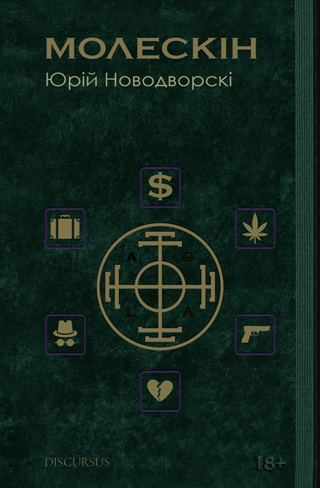

Юрій
Новодворскі
Автор гостросюжетної повісті «Молескін» та циклу сицилійських новел — прози про дружбу, вибір і ціну, яку платять за дорослішання.
Голос покоління, що подорослішало під час війни — і навчилося говорити про це без пафосу.
Юрій Новодворскі — сучасний український письменник, відомий у мережі під іменем cartelpoet. Його проза виростає з реального досвіду покоління, яке подорослішало в часи війни росії проти України: з провінційних вулиць, студентських компаній, ризику й дружби, що перевіряється на міцність.
У 2022 році у видавництві «Дискурсус» вийшла його дебютна повість «Молескін» — гостросюжетна історія про молодих українців на роздоріжжі долі. Книга швидко знайшла свого читача: сьогодні авторський блог у мережі стежать тисячі людей.
Новодворскі пише про те, що добре знає — про сміливість і недалекоглядність, про компроміси із совістю та про ціну кожного вибору. Його тексти — це кіно на папері: динамічні, чесні й безжальні до ілюзій.

Молескін
Данило Думанський — типовий представник покоління, що подорослішало в часи війни росії на сході України. Ще зі студентських років він вчився долати труднощі по-своєму: разом із приятелями випробовував фортуну — і врешті потрапляв у небезпечні ситуації.
Зв'язавшись із кримінальним світом та великою політикою, Думанський стає пішаком у чужих іграх і наражає на небезпеку не лише себе, а й найрідніших. Чи вдасться йому вкотре вийти сухим із води — і які висновки він зробить?
Історія про дружбу, про компроміси із совістю, про сміливість і недалекоглядність — і про те, наскільки далеко здатні зайти звичайні українські хлопці, що опинилися на роздоріжжі долі.
Сицилійські новели
Окремою лінією у творчості Новодворського став цикл сицилійських новел — короткі, наче постріл, історії про честь, спокусу й перевірку характеру там, де Середземне сонце ховає довгі тіні.
Цикл народжується й живе в авторському блозі: нові новели з'являються серіями, збираючи щоразу більше читачів. Це та сама впізнавана інтонація «Молескіна» — тільки під іншим небом.
«Наскільки далеко здатні зайти звичайні хлопці, що опинилися на роздоріжжі долі».— з повісті «Молескін»
Слідкуйте за автором
Нові тексти, презентації та анонси — на сторінках Юрія в соцмережах. Щоб замовити книгу за спеціальною ціною, напишіть у direct.